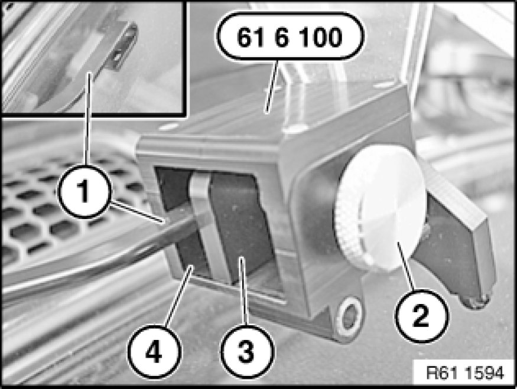
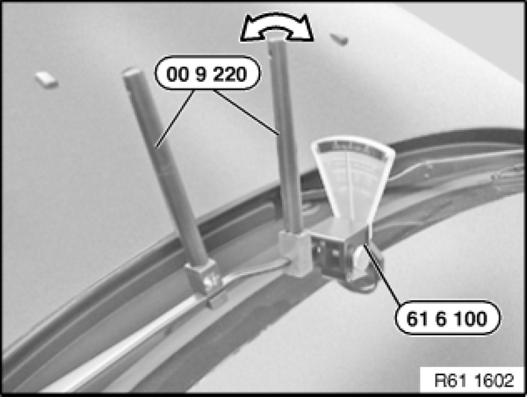

61 61 010 Checking/Adjusting Contact Angle of Windscreen Wiper Arms on Windscreen
61 61 010 - Checking/adjusting contact angle of windscreen wiper arms on windscreen

Special tools required:

Note:
The wipe quality is improved by precise adjustment of the contact/approach angle 61 61 ... Adjusting Left or Right Windscreen Wiper of the wiper arms.

Necessary preliminary tasks:
- Remove wiper blades Service and Repair

Insert windscreen wiper arm (1) in special tool 61 6 100.
Using screw (2) and pressure plate (3), locate windscreen wiper arm (1) and position on windscreen.
Read off scale value, adjust wiper arm if necessary.
Note:
Windscreen wiper arm (1) must rest correctly on lower and side contact surfaces (4) of special tool 61 6 100.
On right-hand-drive cars, screw (2) must be located on left side of special tool 61 6 100.

Move special tools 00 9 220 in appropriate direction until correct contact/approach angle is obtained.